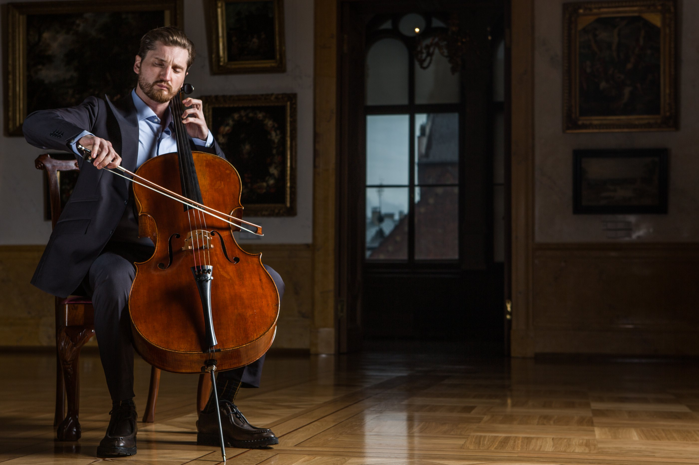
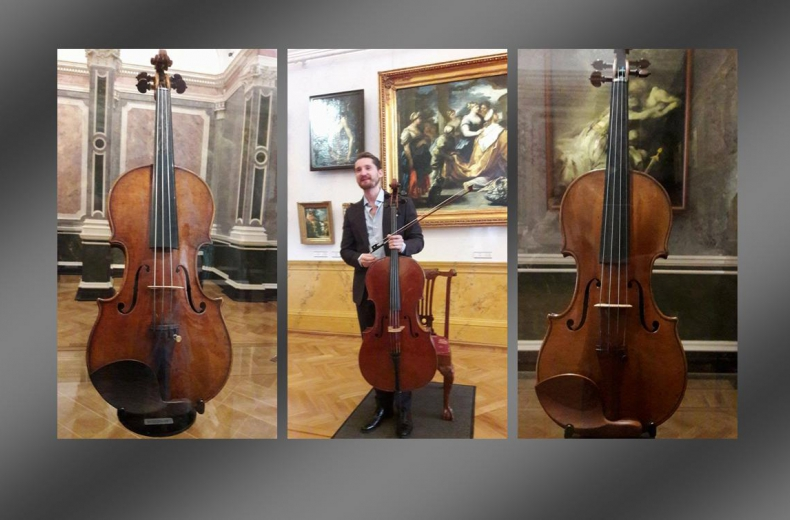
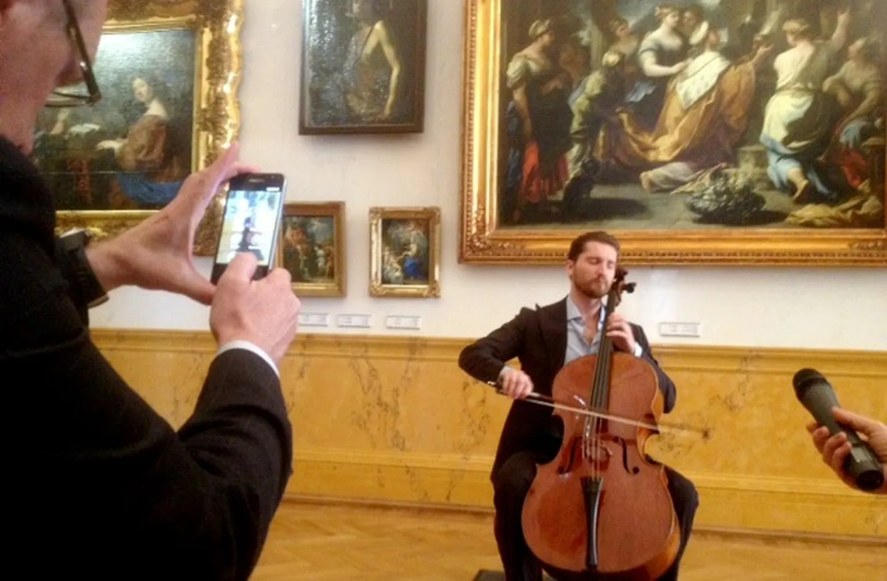
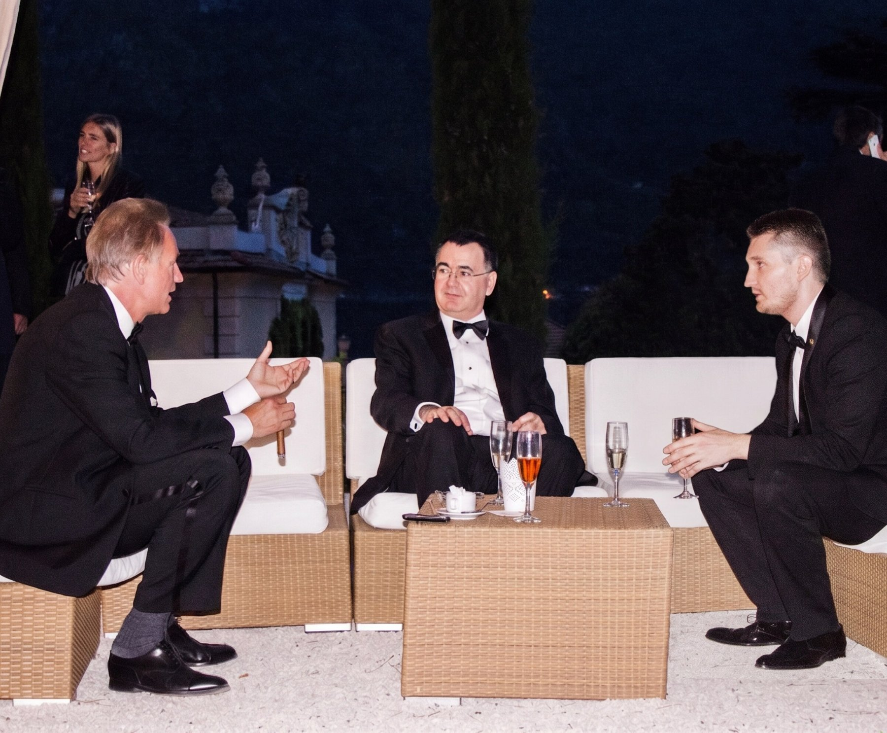
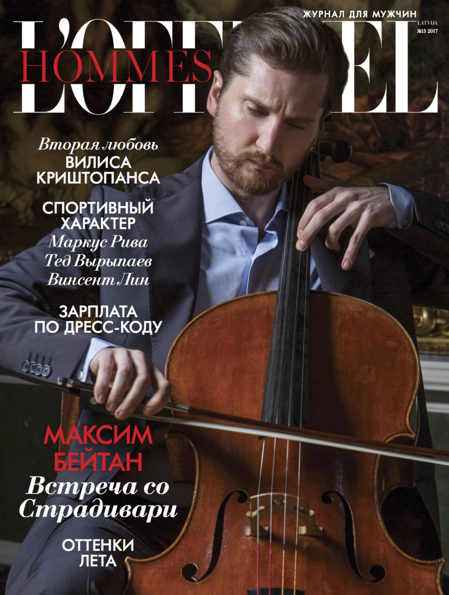

Legendary Italian string instruments — gathered in Latvia for the first time.
Eight instruments by the great Cremonese and Venetian masters — shown together, for three days only.
In the Venice Hall of the Art Museum Rīga Bourse, the foundation presented a singular gathering of instruments crafted by Stradivari, Guarneri, Amati and Storioni — five violins, a viola and two cellos. It was the first time such a collection had travelled to Latvia, and a rare occasion on which instruments of this value were brought together in one specially assembled exhibition.
The exhibition was organised by Fine Violins Vienna in cooperation with cellist Max Beitan and the Baltic Musical Seasons foundation. Several of the instruments left their vitrines days later to be heard in concert — a reminder that these are not relics, but living voices that continue to be played.
At the press opening, Max Beitan walked into the Venice Hall carrying the Archinto and played the Prelude from Bach's Third Suite for solo cello — a quiet astonishment for everyone present.
One of Stradivari's most celebrated cellos, the 1689 Archinto is believed to have been made for Cardinal — later Archbishop — Giuseppe Archinto of Milan, though no document confirms it. Its near-twin, the Mediceo of 1690, is so alike that the two may have been cut from the same maple; it survives in Florence. Carefully shortened in the early 19th century, the Archinto still carries its deep red-brown varnish and an arching touched by the Amati school — and its ownership runs in near-unbroken succession, from the Archinto collection through Vuillaume and Delsart to the present day.
“One of the best Stradivari I have ever seen.”
Mstislav Rostropovich — on the Archinto cello
Days after the exhibition closed, several of the instruments sounded again — at the opening concert of the Baltic Musical Seasons in the Dzintari Concert Hall.
The programme was performed by the Luigi Cherubini Orchestra under the baton of Maestro Riccardo Muti, returning these masterpieces, however briefly, to the purpose for which they were made.
The foundation's work with great Italian makers has also taken it to Villa del Balbianello on Lake Como — presented in collaboration with FAI, the Fondo Ambiente Italiano, which has cared for the villa since 1988.
Bringing collectors, makers and musicians into one room, these gatherings are where the foundation's purpose is clearest: stewardship of rare instruments, and the artists who give them voice.





The foundation curates exhibitions of fine instruments and supports the artists who play them. Partner with us, or lend your support.